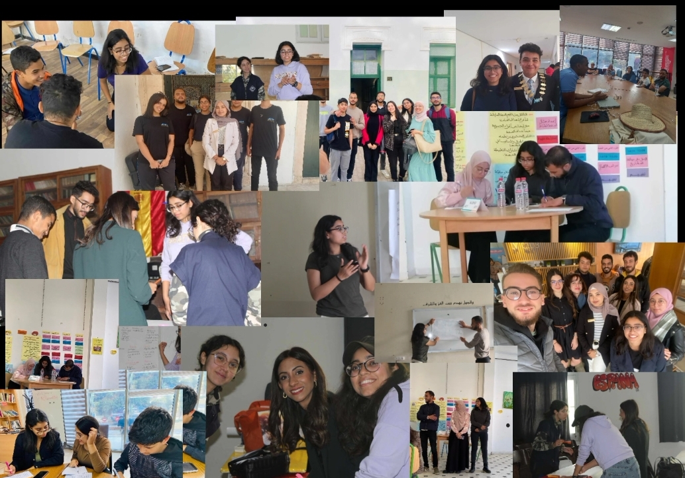
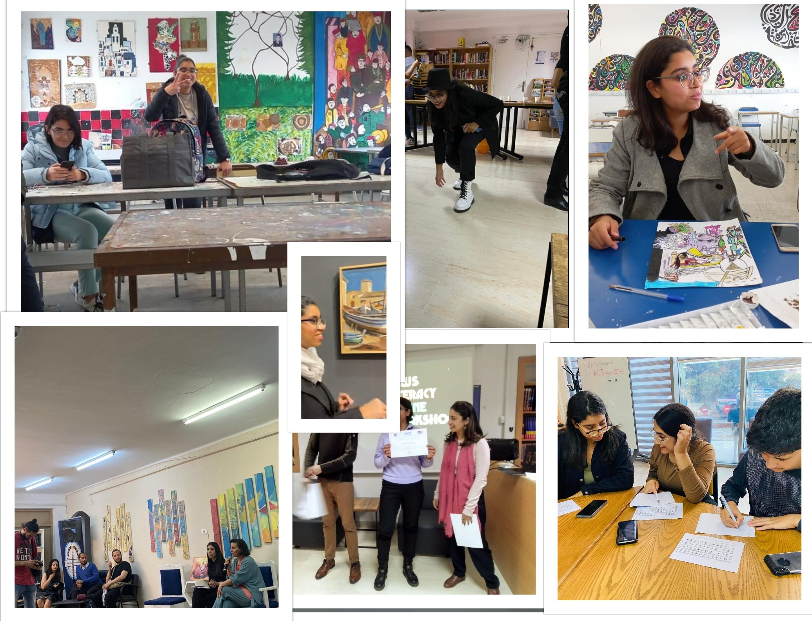

A space where I
continuously thrive.
Leadership & Outreach
JCI Leaders Beb Souika
Sent over 1,500 outreach emails to corporate sponsors, securing critical event funding.
Promoted to Commissioner and currently serving as External Relations Consultant.
Active content writer and video editor, producing weekly community updates.

Collaborative Sessions 2023-2026

Community Impact
American Corner Tunis
Actively promoting the space and regularly moderating English conversation sessions. Involved participant in the Debate Club, Dance Club, and specialized workshops.
Green City Movement
Organized clean-up drives, transforming discarded areas, and facilitating workshops on sustainable behavior change in local communities.